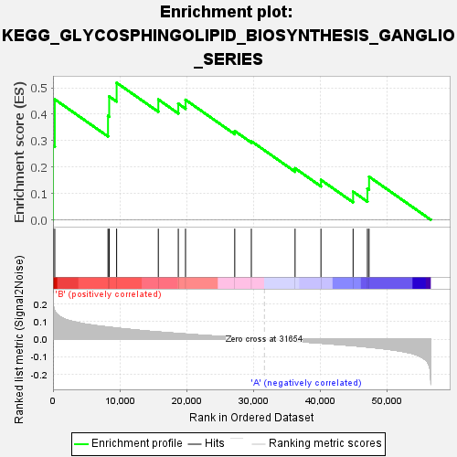
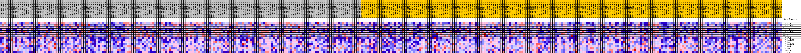
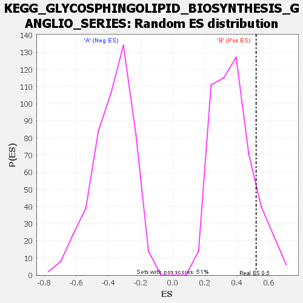

| | | Dataset | my.my.cls#B_versus_A.my.cls#B_versus_A_repos |
| Phenotype | my.cls#B_versus_A_repos |
| Upregulated in class | B |
| GeneSet | KEGG_GLYCOSPHINGOLIPID_BIOSYNTHESIS_GANGLIO_SERIES |
| Enrichment Score (ES) | 0.5194844 |
| Normalized Enrichment Score (NES) | 1.3865765 |
| Nominal p-value | 0.13017751 |
| FDR q-value | 0.5164065 |
| FWER p-Value | 0.872 |
Table: GSEA Results Summary

Fig 1: Enrichment plot: KEGG_GLYCOSPHINGOLIPID_BIOSYNTHESIS_GANGLIO_SERIES
Profile of the Running ES Score & Positions of GeneSet Members on the Rank Ordered List

Fig 2: KEGG_GLYCOSPHINGOLIPID_BIOSYNTHESIS_GANGLIO_SERIES
Blue-Pink O' Gram in the Space of the Analyzed GeneSet

Fig 3: KEGG_GLYCOSPHINGOLIPID_BIOSYNTHESIS_GANGLIO_SERIES: Random ES distribution
Gene set null distribution of ES for KEGG_GLYCOSPHINGOLIPID_BIOSYNTHESIS_GANGLIO_SERIES